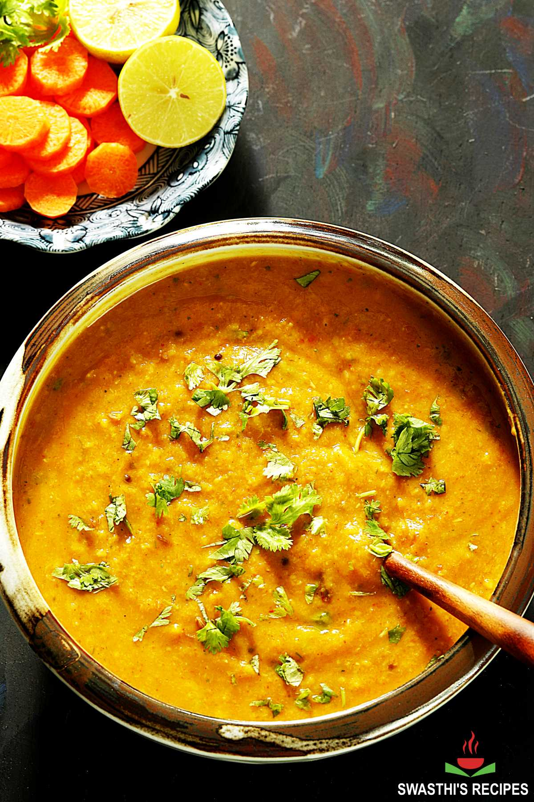

The Best Dalfry Recipe

INGREDIENTS
- 1/2 cup Soaked Red Gram
- 2 tsp Soaked Green Gram
- 2 tbsp Soaked Bengal Gram
- 1/4 tsp Turmeric
- 4 Green Chillies
- 3 Bunches Malabar Spinach leaves chopped (250gms)
- 2 tbsp Tamarind Juice (Extracted from a ball of Tamarind the size of a Gooseberry)
- 2 cups Water
- Salt
For Seasoning
- 2 tbsp Oil
- 1 tsp Mustrd Seeds
- 1 tsp Bengal Gram
- 1 tsp Black Gram
- 1/2 tsp Cumin Seeds
- 2 Red Chillies
- Asafoetida – 2 pinches
- 1 Sprig Curry Leaves
- 1/4 cup Tomato Pieces
- Add the soaked Red gram, Green Gram, Bengal Gram, Turmeric, Green Chillies, chopped Malabar Spinach leaves and Water and cook on a medium flame till three whistles.
- Smash the Dal once the steam is out. Add Salt and Tamarind Juice to the Dal and cook for a while and remove from the stove.
- Heat Oil and add the ingredients for Seasoning and roast well.
- Add the Tomato Pieces at the end and cook until they turn soft, Then mix in the Dal.
Back to Homepage